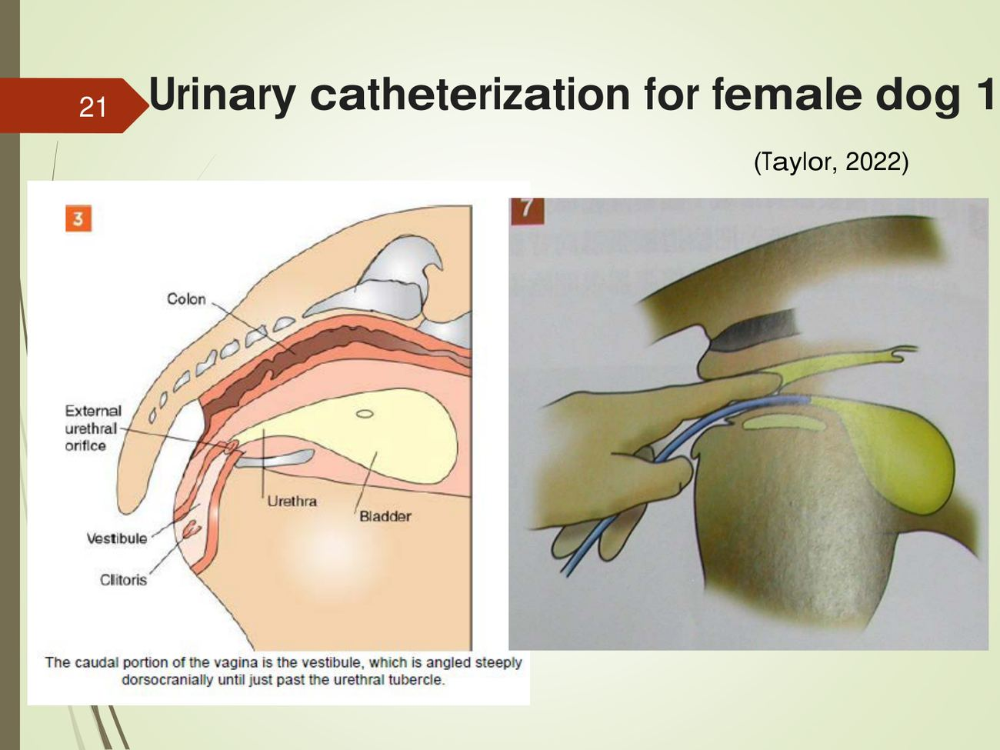

大方向與重點摘要
- 這章在講什麼
- 把理學檢查找到的問題送進實驗室之前，怎麼正確採到檢體：血液（四條靜脈）、尿液（導尿、膀胱穿刺）、皮膚（刮皮、膠帶、吸塵、膿疱培養）、體腔液（腹腔穿刺、胸腔穿刺）。講義幾乎都是 Taylor《小動物臨床技術》的步驟照片，文字很少，資訊多在照片的英文圖說裡，本頁把圖說逐一翻譯並整理成步驟。
- 為什麼重要
- 檢體採錯，後面的檢驗就沒有意義：例如自然排尿會被下泌尿道的細菌、細胞與碎屑汙染，要做尿液培養就需要膀胱穿刺（p.16）；刮皮刮不夠深就找不到毛囊蟲。胸腹腔穿刺則是診斷也是治療（抽胸水緩解呼吸困難）。
- 這章要抓的重點
-
- 採血四條靜脈：外頸靜脈（external jugular）、頭靜脈（cephalic）、外側隱靜脈（lateral saphenous，犬常用）、內側隱靜脈（medial saphenous，貓常用）（p.3）。
- 頸靜脈的位置：在頸靜脈溝（jugular furrow），位於頸部側面、氣管的背外側（p.6）。
- 膀胱穿刺的目的：取得不受下泌尿道細菌、細胞、碎屑汙染的尿液（p.16）；針頭朝背尾側（dorsocaudally）（p.27）。
- 母犬導尿：尿道口在陰道腹側底部的小隆起上；前庭往背頭側陡升（p.21、p.24）。
- 皮膚檢體：疥癬蟲與毛囊蟲好發位置不同；刮皮要刮到滲出血清與微血管出血（p.31）；夏蟲（Cheyletiella）用膠帶法（p.36）；跳蚤糞用吸塵法＋白紙加水看擴散（p.37）。
- 腹腔穿刺：腹正中線、臍後方 2–3 cm；少量積液常是陰性 → 診斷性腹膜灌洗：溫生理食鹽水 20 mL/kg 腹腔內灌入，按摩後取至少 1 mL（p.40）。
- 胸腔穿刺：動物站立或趴姿讓胸水聚到腹側；第 6–8 肋間、肋軟骨交接處正上方進針；肋間血管神經在每根肋骨的正後方，所以貼著肋骨前緣進針（p.43–44）。
- 容易混淆
- 外側 vs 內側隱靜脈：外側隱靜脈在後肢外側、跗關節上方，犬常用；內側隱靜脈在後肢內側，貓常用（講義用貓示範，p.14）。疥癬蟲 vs 毛囊蟲：疥癬好發耳緣、肘、跗關節、腹側（p.29）；毛囊蟲的照片病灶在臉（眼周、臉部）與腳（p.30）。胸腔穿刺貼肋骨前緣，不是後緣：血管神經走在肋骨後緣（p.44）。
- 考試可能怎麼問
（依學長姐考古） - 學長姐整理的王麗倩考古出現過：腹腔穿刺位置、胸腔穿刺位置（含肋骨前緣進針）、DIC 的原因、小腸與大腸性下痢、糞便檢查方法（後三題見第 7 節）。
內容以老師講義為主體；講義照片的英文圖說由整理者翻譯。標示「補充」的段落（含「讀書補充Note」）是講義以外的延伸；標示「推測」的是依講義推測；標示「學長姐回憶」的是考古資料夾裡的學長姐整理，非官方答案。考試範圍以老師上課為準。圖片為老師講義截圖（講義引自 Taylor 2022）。
血、尿、皮膚、體腔液
採血 Blood Collection（Venipuncture）
四條靜脈都照同樣三步：保定 → 讓血管怒張（壓住近心端）→ 用拇指固定血管再下針。
四條靜脈比較必考
| 靜脈 | 保定（講義照片） | 讓血管怒張與固定 |
|---|---|---|
| 外頸靜脈 external jugular | 貓：抱住身體、頭往上抬（p.4）；中型犬：坐姿，保定者抱住身體與頭（p.5）；大型犬：坐姿，保定者在側面控制頭與身體（p.6） | 位於頸靜脈溝（頸側、氣管背外側）（p.6）；在頸部基部壓住使血管怒張（p.7） |
| 頭靜脈 cephalic | 犬趴姿，保定者一手環住頭頸、一手握前肢肘部（p.8） | 握肢那隻手的拇指把頭靜脈往外側推並壓住，血管就會怒張（p.9）；下針時固定血管（p.10） |
| 外側隱靜脈 lateral saphenous | 犬側躺（p.11） | 壓住血管上方使其怒張（p.12）；拇指貼在血管旁固定後下針（p.13） |
| 內側隱靜脈 medial saphenous | 貓側躺，保定者一手控制頭頸、一手拉住後肢（p.14） | 壓住後肢內側近端使血管怒張（p.15） |
補充：頸靜脈管徑大、血流快，適合一次採較多血或需要避免溶血的檢體；貓常用內側隱靜脈、犬常用外側隱靜脈，是因為貓的內側隱靜脈較明顯、犬的外側隱靜脈較明顯。講義沒有寫各靜脈的使用時機，以上為一般臨床做法。
採尿 Urine Collection
兩種方法：導尿（公犬、母犬做法不同）與膀胱穿刺。要做尿液培養時，膀胱穿刺是最乾淨的檢體。
兩種方法的目的必考
- 導尿 Urinary catheterization：公犬（male）、母犬（female）（p.16）。
- 膀胱穿刺 Cystocentesis：取得不受下泌尿道來源的細菌、細胞、碎屑汙染的尿液（To collect urine samples that are free from contamination by bacteria, cells, and debris originating from the lower urinary tract）（p.16）。
公犬導尿理解
母犬導尿理解

膀胱穿刺必考
補充：針頭朝背尾側，是讓針對準膀胱頸方向、遠離膀胱頂；講義沒有寫為什麼，這是一般說法。膀胱太小摸不到時盲穿風險高，臨床常用超音波導引。
皮膚檢體 Collecting Integumentary Specimens
先依病灶位置猜是哪種蟲，再選方法：刮皮（疥癬蟲、毛囊蟲）、膠帶法（夏蟲）、吸塵法（跳蚤糞）、膿疱培養（細菌）。
疥癬蟲與毛囊蟲的好發位置必考
| 蟲 | 好發位置（講義示意圖） | 照片的病變 |
|---|---|---|
| 疥癬蟲 Sarcoptic mange（Sarcoptes scabiei） | 耳緣、肘、跗關節、腹側（p.29 示意圖紅色區） | 脫毛、紅斑、抓傷（alopecia, erythema, excoriations）（p.29） |
| 毛囊蟲 Demodex（Demodex canis） | 示意圖標示好發位置（p.30）；照片病灶在眼周、臉部、腳 | 眼周脫毛紅斑脫屑（黃金獵犬）、臉部紅斑脫屑結痂（年輕鬥牛犬）、毛囊蟲性趾間皮膚炎（pododermatitis）（p.30） |
刮皮 Skin scraping必考
補充：毛囊蟲住在毛囊深處，刮皮要刮到微血管出血（深層刮皮）才找得到；疥癬蟲在表皮隧道內、數量少，常要刮大範圍、多個位置，陰性不能排除。講義只寫「刮到出血」，深淺之分為一般說法。
膠帶法 Cellophane tape method理解
- 器材：玻片、透明膠帶、礦物油（p.34）。
- 膠帶黏面貼在毛與皮膚上，黏起皮屑與碎屑（p.34）；黏面朝下貼到滴了礦物油的玻片上（p.35）。
- 講義例子：夏蟲（Cheyletiella yasguri）——幼犬脫屑與搔癢，俗稱「會走路的皮屑（walking dandruff）」，用膠帶法在顯微鏡下找到（p.36）。
吸塵法與膿疱細菌培養理解
腹腔穿刺 Abdominocentesis
腹腔出現積液時做；位置記一個數字：臍後 2–3 cm 的腹正中線。
位置與診斷性腹膜灌洗必考
| 項目 | 內容（p.40） |
|---|---|
| 適應症 | 腹腔出現積液 |
| 針刺位置 | 腹正中線、臍後方 2–3 cm |
| 少量積液 | 檢查結果多為陰性（抽不到） |
| 診斷性腹膜灌洗 | 灌入溫生理食鹽水 20 mL/kg（腹腔內），按摩使液體分布均勻 → 腹腔穿刺取至少 1 mL 灌洗液 |
| 送檢 | 細胞學、生化學、微生物學分析 |
例：10 kg 的犬，灌洗量＝20 mL/kg × 10 kg＝200 mL 溫生理食鹽水（腹腔內灌入）。計算為整理者示意，數字 20 mL/kg 與「至少 1 mL」出自講義 p.40。
補充：講義的位置在「臍後」，是為了避開臍前方的鐮狀韌帶脂肪與脾臟；腹水的鑑別（漏出液、修飾性漏出液、滲出液）屬臨床病理學內容，講義沒有寫。
胸腔穿刺 Thoracentesis
先用理學檢查與 X 光確認胸水的量和位置，再在第 6–8 肋間、肋軟骨交接處上方、貼肋骨前緣進針。
什麼時候想到胸水理解
- 液體蓄積在胸膜腔（臟層胸膜與壁層胸膜之間）（p.43）。
- 臨床：呼吸快而淺，腹側心音與肺音模糊（p.43）——和物理檢查頁「快而淺＝胸膜腔疾病」、「心音模糊可能是胸腔積液」對得上。
- X 光檢查確認（p.43）。
穿刺位置必考
| 項目 | 內容 |
|---|---|
| 姿勢 | 動物站立或正趴（胸骨臥），讓液體聚積在腹側（p.43–44） |
| 找位置 | 配合理學與 X 光檢查找出胸水的量與位置（p.43） |
| 進針點 | 第 6–7–8 肋間、肋軟骨交接處正上方（p.43） |
| 貼哪一邊 | 肋間的靜脈、動脈、神經位在每根肋骨的正後方（p.44）→ 貼著肋骨前緣進針，避開血管神經（學長姐考古答案也寫「肋骨前緣進針」） |
| 送檢 | 細胞學、生化學、微生物學分析（p.43） |
「貼肋骨前緣」是因為血管神經在肋骨後緣。容易寫反：答題時寫「於肋骨前緣進針，以避開走在肋骨後緣的肋間血管與神經」。
考試方向（依學長姐考古）
學長姐心得說王麗倩老師的部分「基本上考古」（學長姐回憶）。下表依〈臨影診期中考古融合〉p.1–2 的學長姐整理，答案為學長姐版本加上本頁講義內容，非官方。DIC、下痢、糞便檢查三題本講義沒有教，列出學長姐答案供參考。
| 考古題目 | 答題重點 | 出處 |
|---|---|---|
| 腹腔穿刺位置 | 腹正中線、臍後方 2–3 cm；少量積液可做診斷性腹膜灌洗（溫生理食鹽水 20 mL/kg 腹腔內） | 本頁第 5 節（p.40） |
| 胸腔穿刺位置 | 第 6–7（–8）肋間、肋軟骨交接處正上方，肋骨前緣進針（血管神經在肋骨後緣）；站立或胸骨臥 | 本頁第 6 節（p.43–44） |
| DIC 的原因 | 學長姐答案：細菌感染（內毒素）、病毒感染、抗原抗體複合物、血管內溶血、大面積燒傷、瀰漫性血管內皮受損、休克 → 凝血被廣泛活化，造成全身微血栓與消耗性出血、溶血性貧血 | 本講義未教；物理檢查講義 p.26 只出現「點狀出血→DIC」 |
| 小腸性 vs 大腸性下痢 | 學長姐答案：小腸性——糞便量大、體重下降、腹鳴脹氣（病毒使絨毛萎縮、球蟲）；大腸性——排便次數多、裡急後重、糞便量少、含黏液與血 | 消化道頁「症狀」節 |
| 糞便檢查方法 | 學長姐答案：消化試驗、塗抹法、浮游法；塗抹法看原蟲（如梨形鞭毛蟲在小腸、纖毛蟲在大腸），浮游法看線蟲卵與球蟲卵囊（學長姐原文寫「單胞類／線蟲原蟲類」，分法不嚴謹，以老師上課為準） | 本講義未教 |
推測可能出的題：四條採血靜脈的名稱與位置、頸靜脈溝的位置、膀胱穿刺的目的與進針方向、母犬尿道口位置、疥癬蟲與毛囊蟲的好發部位、刮皮刮到什麼程度、夏蟲用什麼方法、跳蚤糞怎麼確認。
練習題 Practice Quiz
13 題，答案預設隱藏；先自己寫再點開核對。
講義 p.40：灌入 20 mL/kg 溫生理食鹽水（腹腔內）。20 × 15＝300 mL。(A) 是 1 mL/kg；(B) 是 10 mL/kg；(D) 是 100 mL/kg，都不是講義的劑量。灌完按摩使液體分布，再穿刺取至少 1 mL 灌洗液。
(A) 錯：量不是目的。(B) 對：to collect urine samples that are free from contamination by bacteria, cells, and debris originating from the lower urinary tract（p.16）。(C) 錯：膀胱穿刺本身就是侵入性操作。(D) 錯：講義沒有這個說法；解除尿道阻塞要靠導尿（補充）。
(A) 對：Directing the needle dorsocaudally during cystocentesis（p.27）。(B)(C)(D) 錯：講義沒有這些方向；朝頭側對準膀胱頂的方向與講義相反。
(A) 錯：方向相反。(B) 對：Pulling the extruded penis straight back caudally reduces the natural curvature of the urethra and simplifies passage of a urinary catheter（p.19）。(C)(D) 錯：講義沒有這樣的建議。
(A)(C) 錯：與皮膚無關。(B) 對：講義 p.36 夏蟲（Cheyletiella yasguri）造成脫屑與搔癢（walking dandruff），用膠帶法找到。(D) 錯：膿疱培養是為了細菌，題目沒有膿疱。
講義 p.37：Debris collected by vacuuming is mixed with a few drops of water on a white card. Blood diffuses out of the debris, confirming that the black specks are flea dirt。跳蚤糞是消化過的血，遇水會擴散出紅色（補充）。